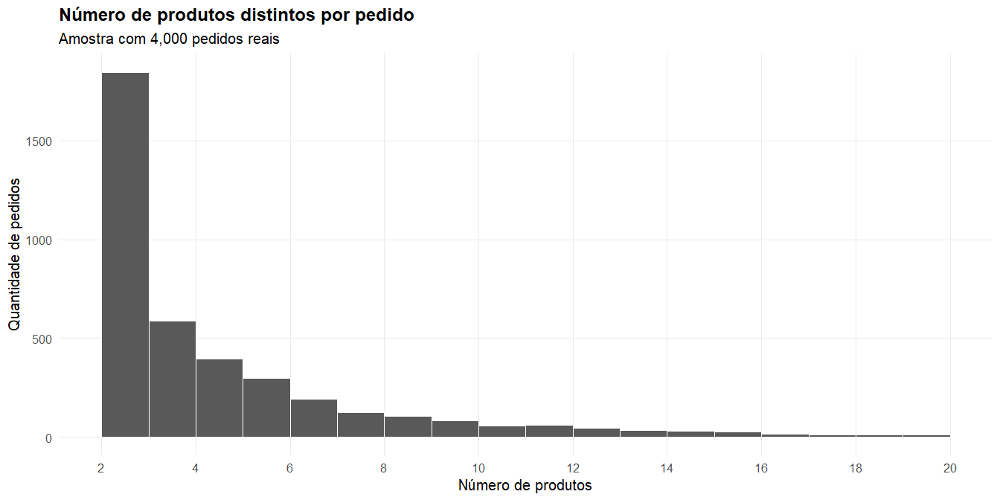
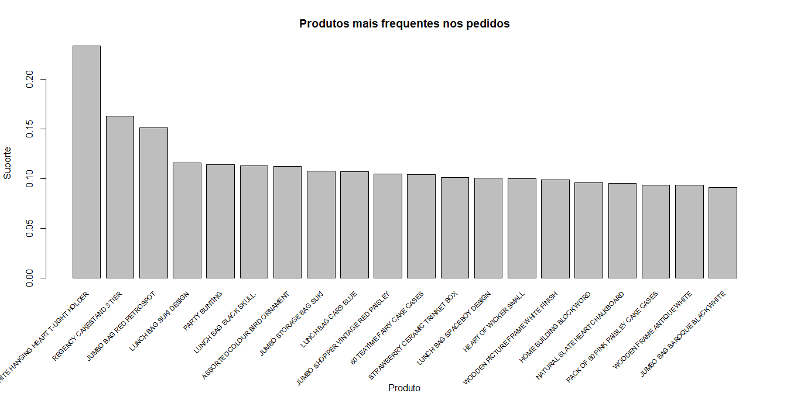
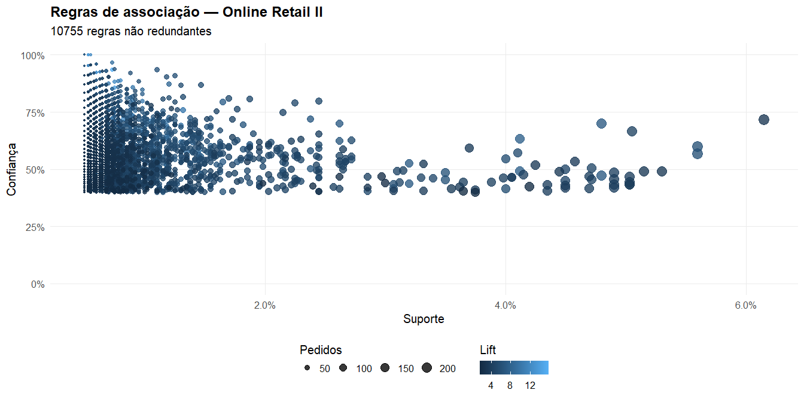

# ============================================================
# REGRAS DE ASSOCIAÇÃO — ONLINE RETAIL II
# Base real da UCI Machine Learning Repository
# ============================================================
# ------------------------------------------------------------
# 0. Pacotes
# ------------------------------------------------------------
pacotes <- c(
"readxl",
"dplyr",
"tidyr",
"stringr",
"purrr",
"janitor",
"arules",
"arulesViz",
"ggplot2",
"scales",
"tibble"
)
faltantes <- pacotes[
!vapply(
pacotes,
requireNamespace,
logical(1),
quietly = TRUE
)
]
if (length(faltantes) > 0) {
install.packages(faltantes)
}
library(readxl)
library(dplyr)
library(tidyr)
library(stringr)
library(purrr)
library(janitor)
library(arules)
library(arulesViz)
library(ggplot2)
library(scales)
library(tibble)
set.seed(335)
# ============================================================
# 1. Download da base oficial
# ============================================================
pasta_dados <- "dados_online_retail"
dir.create(
pasta_dados,
showWarnings = FALSE,
recursive = TRUE
)
arquivo_zip <- file.path(
pasta_dados,
"online_retail_II.zip"
)
arquivo_xlsx <- file.path(
pasta_dados,
"online_retail_II.xlsx"
)
url_uci <- paste0(
"https://archive.ics.uci.edu/static/public/502/",
"online%2Bretail%2Bii.zip"
)
if (!file.exists(arquivo_xlsx)) {
if (!file.exists(arquivo_zip)) {
message("Baixando a base Online Retail II...")
download.file(
url = url_uci,
destfile = arquivo_zip,
mode = "wb",
quiet = FALSE
)
}
unzip(
zipfile = arquivo_zip,
exdir = pasta_dados
)
}
# Localizar automaticamente o arquivo Excel
arquivos_excel <- list.files(
pasta_dados,
pattern = "\\.xlsx$",
full.names = TRUE,
recursive = TRUE
)
if (length(arquivos_excel) == 0) {
stop("O arquivo Excel não foi encontrado após a descompactação.")
}
arquivo_xlsx <- arquivos_excel[1]
message("Arquivo utilizado: ", arquivo_xlsx)Parte III : Aprendizado não supervisionado
Regras de Associação
Regras de Associação
Regras de Associação
Regras de associação são utilizadas para identificar padrões de ocorrência conjunta entre itens.
Uma aplicação clássica é a análise de cesta de compras:
Quais produtos costumam aparecer juntos em uma mesma transação?
Regras de Associação
Exemplos:
\[ \{\text{pão}\} \Rightarrow \{\text{manteiga}\} \]
\[ \{\text{fraldas},\text{leite}\} \Rightarrow \{\text{cerveja}\} \]
Importante
O objetivo não é prever uma variável resposta, mas descobrir relações frequentes entre itens presentes nas transações.

Estrutura dos dados transacionais
Uma base de regras de associação é composta por um conjunto de transações.
Cada transação contém um subconjunto de itens.
| Transação | Itens |
|---|---|
| \(T_1\) | pão, leite, manteiga |
| \(T_2\) | leite, iogurte |
| \(T_3\) | pão, manteiga |
| \(T_4\) | leite, frutas, iogurte |
| \(T_5\) | pão, leite |
Estrutura dos dados transacionais
Formalmente,
\[ T_i \subseteq \mathcal{I}, \]
onde \(\mathcal{I}\) representa o conjunto de todos os itens disponíveis.
Nota
Diferentemente de uma base tabular tradicional, cada transação pode conter uma quantidade diferente de itens.
Estrutura de uma regra de associação
Uma regra possui a forma
\[ X \Rightarrow Y \]
onde:
- \(X\) é o antecedente;
- \(Y\) é o consequente;
- \(X\cap Y=\varnothing\).
Estrutura de uma regra de associação
Exemplo:
\[ \{\text{pão},\text{manteiga}\} \Rightarrow \{\text{leite}\} \]
A regra indica que transações contendo os itens de \(X\) tendem também a conter os itens de \(Y\).
Cuidado
Uma regra de associação representa coocorrência, não uma relação de causa e efeito.

Suporte
O suporte mede a frequência de ocorrência de um conjunto de itens.
\[ \operatorname{supp}(X) = \frac{ \#\{\text{transações contendo }X\} }{ \#\{\text{transações}\} } \]
Para uma regra \(X\Rightarrow Y\),
\[ \operatorname{supp}(X\Rightarrow Y) = \operatorname{supp}(X\cup Y) \]
Exemplo
A combinação
\[ \{\text{pão},\text{leite}\} \]
aparece em 3 de 5 transações:
\[ \operatorname{supp} \left( \{\text{pão}\}\Rightarrow\{\text{leite}\} \right) = \frac{3}{5} = 0{,}60 \]
Importante
O suporte considera toda a base de transações, e não apenas as transações que contêm o antecedente.
Confiança
A confiança mede a proporção de transações com \(X\) que também contêm \(Y\).
\[ \operatorname{conf}(X\Rightarrow Y) = \frac{ \operatorname{supp}(X\cup Y) }{ \operatorname{supp}(X) } \]
Equivalentemente,
\[ \operatorname{conf}(X\Rightarrow Y) = \frac{ \#\{\text{transações contendo }X\cup Y\} }{ \#\{\text{transações contendo }X\} } = P(Y\mid X) \]
Exemplo
Se
\[ \operatorname{supp}(X)=0{,}80 \qquad\text{e}\qquad \operatorname{supp}(X\cup Y)=0{,}60, \]
então
\[ \operatorname{conf}(X\Rightarrow Y) = \frac{0{,}60}{0{,}80} = 0{,}75 \]
Importante
Quando \(X\) ocorre, \(Y\) também ocorre em 75% das transações.
Lift
O lift compara a frequência observada de uma regra com a frequência esperada caso o antecedente e o consequente fossem independentes.
A definição é
\[ \operatorname{lift}(X\Rightarrow Y) = \frac{ \operatorname{conf}(X\Rightarrow Y) }{ \operatorname{supp}(Y) } \]
Substituindo a expressão da confiança,
\[ \operatorname{lift}(X\Rightarrow Y) = \frac{ \dfrac{\operatorname{supp}(X\cup Y)} {\operatorname{supp}(X)} }{ \operatorname{supp}(Y) } \]
Lift
obtemos
\[ \operatorname{lift}(X\Rightarrow Y) = \frac{ \operatorname{supp}(X\cup Y) }{ \operatorname{supp}(X)\, \operatorname{supp}(Y) } \]
Como
\[ \operatorname{supp}(X)=P(X), \qquad \operatorname{supp}(Y)=P(Y), \qquad \operatorname{supp}(X\cup Y)=P(X\cap Y), \]
Lift
segue que
\[ \operatorname{lift}(X\Rightarrow Y) = \frac{ P(X\cap Y) }{ P(X)\,P(Y) } \]
Observação
O lift mede quanto a ocorrência conjunta de \(X\) e \(Y\) difere da situação em que ambos seriam independentes.
Exemplo
Considere a regra
\[ \{\text{pão}\} \Rightarrow \{\text{leite}\} \]
Suponha que
\[ \operatorname{supp}(\{\text{pão}\})=0{,}80, \qquad \operatorname{supp}(\{\text{leite}\})=0{,}75, \qquad \operatorname{supp}(\{\text{pão},\text{leite}\})=0{,}60, \]
A confiança da regra é
\[ \operatorname{conf} \left( \{\text{pão}\}\Rightarrow\{\text{leite}\} \right) = \frac{ \operatorname{supp}(\{\text{pão},\text{leite}\}) }{ \operatorname{supp}(\{\text{pão}\}) } = \frac{0{,}60}{0{,}80} = 0{,}75 \]
Exemplo
O lift é dado por
\[ \operatorname{lift} \left( \{\text{pão}\}\Rightarrow\{\text{leite}\} \right) = \frac{ \operatorname{conf} \left( \{\text{pão}\}\Rightarrow\{\text{leite}\} \right) }{ \operatorname{supp}(\{\text{leite}\}) } \]
Substituindo os valores,
\[ \operatorname{lift} \left( \{\text{pão}\}\Rightarrow\{\text{leite}\} \right) = \frac{0{,}75}{0{,}75} = 1 \]
Equivalentemente,
\[ \operatorname{lift} \left( \{\text{pão}\}\Rightarrow\{\text{leite}\} \right) = \frac{ 0{,}60 }{ 0{,}80\times 0{,}75 } = 1 \]
Exemplo
Importante
O valor \(\operatorname{lift}=1\) indica que a presença de pão não altera a probabilidade de compra de leite.
Apesar da confiança de 75%, a associação não é maior do que seria esperado caso os dois itens fossem independentes.
Interpretação do Lift
Interpretação do Lift
lift > 1: associação positiva;
lift = 1: associação equivalente ao acaso (independência);
lift < 1: associação negativa.
Exemplo
| Situação | Confiança | Lift | Interpretação |
|---|---|---|---|
| Leite → Pão | 0,90 | 1,05 | Alta confiança, mas pouca informação nova |
| Caviar → Champagne | 0,45 | 6,8 | Associação rara, porém muito forte |
| Refrigerante → Água | 0,30 | 0,55 | Associação negativa |
Explosão combinatória
Considere uma base contendo \(m\) itens distintos.
O número de possíveis conjuntos de itens (itemsets) é
\[ 2^{m}-1 \]
Esse crescimento é exponencial.
| Número de itens | Possíveis itemsets |
|---|---|
| 10 | 1 023 |
| 20 | 1 048 575 |
| 30 | 1 073 741 823 |
| 50 | \(1,13\times10^{15}\) |
Explosão combinatória
Mesmo para bases moderadas, torna-se inviável avaliar todas as combinações possíveis.
O principal desafio das regras de associação não é calcular suporte ou confiança, mas reduzir drasticamente o número de combinações que precisam ser avaliadas.

Algoritmo Apriori
Propriedade Apriori
O algoritmo Apriori baseia-se em uma propriedade simples, porém extremamente poderosa.
Se um conjunto de itens é frequente, então todos os seus subconjuntos também são frequentes.
Equivalentemente,
Se um subconjunto não é frequente, nenhum de seus superconjuntos poderá ser frequente.
Propriedade Apriori
Por exemplo,
\[ \{\text{leite},\text{pão},\text{manteiga}\} \]
somente poderá ser frequente se
- \(\{\text{leite},\text{pão}\}\);
- \(\{\text{leite},\text{manteiga}\}\);
- \(\{\text{pão},\text{manteiga}\}\)
também forem frequentes.
Importante
Essa propriedade permite eliminar milhões de combinações antes mesmo de calcular seus suportes.

Geração dos conjuntos frequentes
O algoritmo Apriori constrói os conjuntos frequentes de forma iterativa.
Passo 1
Calcular o suporte de todos os conjuntos com 1 item.
Eliminar aqueles cujo suporte seja inferior ao suporte mínimo.
Passo 2
Combinar apenas os itens frequentes para formar conjuntos com 2 itens.
Eliminar novamente aqueles cujo suporte seja inferior ao limite estabelecido.
Repetir esse procedimento para conjuntos de tamanho crescente.
Nota
A quantidade de candidatos diminui rapidamente graças à propriedade Apriori.

Fluxo do algoritmo Apriori
O algoritmo pode ser resumido nas seguintes etapas:
- Definir o suporte mínimo;
- Encontrar todos os itemsets frequentes;
- Gerar candidatos de tamanho crescente;
- Eliminar candidatos usando a propriedade Apriori;
- Repetir até não existirem novos candidatos;
- Gerar as regras de associação;
- Filtrar regras por confiança e lift.
Importante
O Apriori primeiro encontra os conjuntos frequentes. As regras de associação são geradas somente após essa etapa.

Exemplo manual do algoritmo Apriori
Considere a seguinte base transacional:
| Transação | Itens |
|---|---|
| \(T_1\) | leite, pão, manteiga |
| \(T_2\) | leite, pão |
| \(T_3\) | leite |
| \(T_4\) | pão, manteiga |
| \(T_5\) | leite, pão, manteiga |
| \(T_6\) | leite, pão |
Adotaremos
\[ \boxed{\operatorname{minsup}=0{,}50} \]
Exemplo manual do algoritmo Apriori
Como existem seis transações, um itemset será frequente se ocorrer em pelo menos três delas.
Nota
O Apriori começa avaliando os conjuntos com um item e avança para conjuntos maiores apenas quando seus subconjuntos são frequentes.
Etapa 1: conjuntos frequentes de tamanho 1
Os candidatos iniciais são
\[ C_1= \left\{ \{\text{leite}\}, \{\text{pão}\}, \{\text{manteiga}\} \right\} \]
| Itemset | Frequência | Suporte | Resultado |
|---|---|---|---|
| \(\{\text{leite}\}\) | 5 | \(5/6=0,83\) | Frequente |
| \(\{\text{pão}\}\) | 5 | \(5/6=0,83\) | Frequente |
| \(\{\text{manteiga}\}\) | 3 | \(3/6=0,50\) | Frequente |
Etapa 1: conjuntos frequentes de tamanho 1
Portanto,
\[ L_1= \left\{ \{\text{leite}\}, \{\text{pão}\}, \{\text{manteiga}\} \right\} \]
Todos os itens individuais possuem suporte maior ou igual a 0,50 e podem gerar candidatos de tamanho 2.
Etapa 2: candidatos de tamanho 2
Combinando os elementos de \(L_1\), obtemos
\[ C_2= \left\{ \{\text{leite},\text{pão}\}, \{\text{leite},\text{manteiga}\}, \{\text{pão},\text{manteiga}\} \right\} \]
| Itemset | Transações | Frequência | Suporte | Resultado |
|---|---|---|---|---|
| \(\{\text{leite},\text{pão}\}\) | \(T_1,T_2,T_5,T_6\) | 4 | \(4/6=0,67\) | Frequente |
| \(\{\text{leite},\text{manteiga}\}\) | \(T_1,T_5\) | 2 | \(2/6=0,33\) | Infrequente |
| \(\{\text{pão},\text{manteiga}\}\) | \(T_1,T_4,T_5\) | 3 | \(3/6=0,50\) | Frequente |
Etapa 2: candidatos de tamanho 2
Assim,
\[ L_2= \{ \{\text{leite},\text{pão}\}, \{\text{pão},\text{manteiga}\} \} \]
Importante
O conjunto
\[ \{\text{leite},\text{manteiga}\} \]
é eliminado por possuir suporte inferior ao suporte mínimo.
Etapa 3: candidato de tamanho 3
O único candidato possível é
\[ C_3= \left\{ \{\text{leite},\text{pão},\text{manteiga}\} \right\} \]
Antes de calcular seu suporte, o Apriori verifica seus subconjuntos de tamanho 2:
\[ \{\text{leite},\text{pão}\}, \qquad \{\text{leite},\text{manteiga}\}, \qquad \{\text{pão},\text{manteiga}\} \]
Como
\[ \boxed{ \{\text{leite},\text{manteiga}\} \notin L_2 } \]
Etapa 3: candidato de tamanho 3
o algoritmo conclui imediatamente que
\[ \boxed{ \{\text{leite},\text{pão},\text{manteiga}\} \notin C_3. } \]
Nenhum cálculo de suporte é realizado.
A propriedade Apriori evita calcular o suporte de candidatos que certamente não poderão ser frequentes.
Resultado do algoritmo
A execução termina com
\[ L_1= \{ \{\text{leite}\}, \{\text{pão}\}, \{\text{manteiga}\} \} \]
\[ L_2= \{ \{\text{leite},\text{pão}\}, \{\text{pão},\text{manteiga}\} \} \]
e
\[ L_3=\varnothing \]
Observe que
\[ \{\text{leite},\text{pão},\text{manteiga}\} \]
nem chegou a ser avaliado.
Geração das regras de associação
Após identificar os conjuntos frequentes, o algoritmo gera regras de associação.
No exemplo,
\[ L_2= \left\{ \{\text{leite},\text{pão}\}, \{\text{pão},\text{manteiga}\} \right\} \]
Cada conjunto frequente de dois itens origina duas regras:
- \(\{\text{leite},\text{pão}\}\)
\[ \{\text{leite}\} \Rightarrow \{\text{pão}\} \]
\[ \{\text{pão}\} \Rightarrow \{\text{leite}\} \]
Geração das regras de associação
- \(\{\text{pão},\text{manteiga}\}\)
\[ \{\text{pão}\} \Rightarrow \{\text{manteiga}\} \]
\[
\{\text{manteiga}\}
\Rightarrow
\{\text{pão}\}
\]
Observação
Como nenhum conjunto frequente de três itens foi encontrado, nenhuma regra envolvendo três itens poderá ser gerada.
Cálculo da confiança
Considere a regra
\[ \{\text{leite}\} \Rightarrow \{\text{pão}\} \]
Temos
\[ \operatorname{supp} (\{\text{leite},\text{pão}\}) = \frac46 = 0,67 \]
e
\[ \operatorname{supp} (\{\text{leite}\}) = \frac56 = 0,83 \]
Cálculo da confiança
Assim,
\[ \operatorname{conf} = \frac{0,67}{0,83} = 0,80 \]
Interpretação:
Entre todas as compras contendo leite, 80% também continham pão.
Confiança das regras geradas
| Regra | Confiança |
|---|---|
| leite → pão | \(\frac{4/6}{5/6}=0,80\) |
| pão → leite | \(\frac{4/6}{5/6}=0,80\) |
| pão → manteiga | \(\frac{3/6}{5/6}=0,60\) |
| manteiga → pão | \(\frac{3/6}{3/6}=1,00\) |
Supondo
\[ \boxed{ \operatorname{minconf}=0,70 } \]
Confiança das regras geradas
temos
| Regra | Resultado |
|---|---|
| leite → pão | Mantida |
| pão → leite | Mantida |
| pão → manteiga | Eliminada |
| manteiga → pão | Mantida |
Observação
O suporte identifica conjuntos frequentes. A confiança filtra as regras geradas a partir desses conjuntos.
Cálculo do lift
Para a regra
\[ \{\text{leite}\} \Rightarrow \{\text{pão}\}, \]
temos
\[ \operatorname{conf}=0,80 \]
e
\[ \operatorname{supp} (\{\text{pão}\}) = \frac56 = 0,83 \]
Cálculo do lift
Logo,
\[ \operatorname{lift} = \frac{0,80}{0,83} = 0,96 \]
Como
\[ \operatorname{lift}<1, \]
a associação é ligeiramente inferior ao esperado sob independência.
Interpretação
Apesar da elevada confiança, a compra de leite praticamente não aumenta a probabilidade de compra de pão.
Lift das regras geradas
| Regra | Confiança | Lift |
|---|---|---|
| leite → pão | 0,80 | 0,96 |
| pão → leite | 0,80 | 0,96 |
| pão → manteiga | 0,60 | 1,20 |
| manteiga → pão | 1,00 | 1,20 |
Interpretação
- leite → pão: elevada confiança, porém lift próximo de 1.
- pão → leite: comportamento semelhante.
- pão → manteiga: confiança moderada, mas associação positiva.
- manteiga → pão: sempre que manteiga aparece, pão também aparece.
Importante
O lift mostra o ganho em relação ao comportamento esperado por acaso, enquanto a confiança mede apenas a proporção de ocorrências condicionais.
R: Regras de associação
A base Online Retail II contém transações reais de uma varejista on-line do Reino Unido, registradas entre dezembro de 2009 e dezembro de 2011. O arquivo possui mais de um milhão de registros e inclui número da fatura, produto, quantidade, data, preço, cliente e país.
R: Regras de associação
R: Regras de associação
# ============================================================
# 2. Ler as duas planilhas
# ============================================================
abas <- excel_sheets(arquivo_xlsx)
dados_brutos <- map_dfr(
abas,
function(aba) {
read_excel(
path = arquivo_xlsx,
sheet = aba,
guess_max = 100000
) |>
clean_names() |>
mutate(
origem_planilha = aba
)
}
)
dim(dados_brutos)[1] 1067371 9[1] "invoice" "stock_code" "description" "quantity"
[5] "invoice_date" "price" "customer_id" "country"
[9] "origem_planilha"R: Regras de associação
# ============================================================
# 3. Padronizar nomes das variáveis
# ============================================================
# A versão original do Excel pode utilizar nomes como:
# invoice, price e customer_id.
# Esta função permite reconhecer variações dos nomes.
localizar_coluna <- function(dados, candidatos) {
encontrada <- candidatos[
candidatos %in% names(dados)
]
if (length(encontrada) == 0) {
return(NA_character_)
}
encontrada[1]
}
col_invoice <- localizar_coluna(
dados_brutos,
c("invoice_no", "invoice", "invoiceno")
)
col_stock <- localizar_coluna(
dados_brutos,
c("stock_code", "stockcode")
)
col_description <- localizar_coluna(
dados_brutos,
c("description")
)
col_quantity <- localizar_coluna(
dados_brutos,
c("quantity")
)
col_date <- localizar_coluna(
dados_brutos,
c("invoice_date", "invoicedate")
)
col_price <- localizar_coluna(
dados_brutos,
c("unit_price", "price", "unitprice")
)
col_customer <- localizar_coluna(
dados_brutos,
c("customer_id", "customerid")
)
col_country <- localizar_coluna(
dados_brutos,
c("country")
)
colunas_obrigatorias <- c(
col_invoice,
col_stock,
col_description,
col_quantity,
col_date,
col_price,
col_country
)
if (any(is.na(colunas_obrigatorias))) {
stop(
paste(
"Não foi possível identificar todas as colunas obrigatórias.",
"Colunas encontradas:",
paste(names(dados_brutos), collapse = ", ")
)
)
}
dados <- dados_brutos |>
transmute(
invoice_no = as.character(
.data[[col_invoice]]
),
stock_code = as.character(
.data[[col_stock]]
),
description = as.character(
.data[[col_description]]
),
quantity = as.numeric(
.data[[col_quantity]]
),
invoice_date = .data[[col_date]],
unit_price = as.numeric(
.data[[col_price]]
),
customer_id = if (!is.na(col_customer)) {
as.character(.data[[col_customer]])
} else {
NA_character_
},
country = as.character(
.data[[col_country]]
),
origem_planilha
)
glimpse(dados)R: Regras de associação
Rows: 1,067,371
Columns: 9
$ invoice_no <chr> "489434", "489434", "489434", "489434", "489434", "489…
$ stock_code <chr> "85048", "79323P", "79323W", "22041", "21232", "22064"…
$ description <chr> "15CM CHRISTMAS GLASS BALL 20 LIGHTS", "PINK CHERRY LI…
$ quantity <dbl> 12, 12, 12, 48, 24, 24, 24, 10, 12, 12, 24, 12, 10, 18…
$ invoice_date <dttm> 2009-12-01 07:45:00, 2009-12-01 07:45:00, 2009-12-01 …
$ unit_price <dbl> 6.95, 6.75, 6.75, 2.10, 1.25, 1.65, 1.25, 5.95, 2.55, …
$ customer_id <chr> "13085", "13085", "13085", "13085", "13085", "13085", …
$ country <chr> "United Kingdom", "United Kingdom", "United Kingdom", …
$ origem_planilha <chr> "Year 2009-2010", "Year 2009-2010", "Year 2009-2010", …R: Regras de associação
# ============================================================
# 4. Limpeza dos registros
# ============================================================
dados_limpos <- dados |>
mutate(
invoice_no = str_trim(invoice_no),
stock_code = str_trim(stock_code),
description = description |>
str_squish() |>
str_to_upper(),
country = str_squish(country)
) |>
filter(
!is.na(invoice_no),
invoice_no != "",
!is.na(description),
description != "",
!is.na(quantity),
!is.na(unit_price),
# Excluir devoluções ou quantidades inválidas
quantity > 0,
# Excluir preços inválidos
unit_price > 0,
# Cancelamentos começam por C ou c
!str_detect(
invoice_no,
regex("^C", ignore_case = TRUE)
)
) |>
filter(
# Remover códigos administrativos e registros
# que não representam produtos comercializados
!stock_code %in% c(
"POST",
"DOT",
"M",
"D",
"BANK CHARGES",
"AMAZONFEE",
"CRUK",
"S",
"C2",
"ADJUST",
"ADJUST2",
"TEST001",
"TEST002"
)
) |>
filter(
!str_detect(
description,
regex(
paste(
c(
"POSTAGE",
"CARRIAGE",
"BANK CHARGES",
"AMAZON FEE",
"ADJUSTMENT",
"MANUAL",
"DISCOUNT",
"DOTCOM POSTAGE",
"TEST"
),
collapse = "|"
),
ignore_case = TRUE
)
)
) |>
distinct(
invoice_no,
stock_code,
description,
.keep_all = TRUE
)
cat(
"\nRegistros após limpeza:",
nrow(dados_limpos),
"\nPedidos distintos:",
n_distinct(dados_limpos$invoice_no),
"\nProdutos distintos:",
n_distinct(dados_limpos$description),
"\n"
)
Registros após limpeza: 991928
Pedidos distintos: 39517
Produtos distintos: 5328 R: Regras de associação
# ============================================================
# 5. Análise descritiva inicial
# ============================================================
resumo_base <- tibble(
Medida = c(
"Linhas válidas",
"Pedidos",
"Produtos distintos",
"Clientes identificados",
"Países"
),
Valor = c(
nrow(dados_limpos),
n_distinct(dados_limpos$invoice_no),
n_distinct(dados_limpos$description),
n_distinct(
dados_limpos$customer_id[
!is.na(dados_limpos$customer_id)
]
),
n_distinct(dados_limpos$country)
)
)
print(resumo_base)# A tibble: 5 × 2
Medida Valor
<chr> <int>
1 Linhas válidas 991928
2 Pedidos 39517
3 Produtos distintos 5328
4 Clientes identificados 5852
5 Países 43R: Regras de associação
# ============================================================
# 6. Identificar produtos mais presentes nos pedidos
# ============================================================
numero_produtos_manter <- 60
frequencia_produtos <- dados_limpos |>
distinct(
invoice_no,
description
) |>
count(
description,
name = "numero_pedidos",
sort = TRUE
) |>
mutate(
proporcao_pedidos =
numero_pedidos /
n_distinct(dados_limpos$invoice_no)
)
top_produtos <- frequencia_produtos |>
slice_head(
n = numero_produtos_manter
)
print(
top_produtos |>
slice_head(n = 20)
)R: Regras de associação
# A tibble: 20 × 3
description numero_pedidos proporcao_pedidos
<chr> <int> <dbl>
1 WHITE HANGING HEART T-LIGHT HOLDER 5455 0.138
2 REGENCY CAKESTAND 3 TIER 3918 0.0991
3 JUMBO BAG RED RETROSPOT 3269 0.0827
4 ASSORTED COLOUR BIRD ORNAMENT 2807 0.0710
5 PARTY BUNTING 2674 0.0677
6 LUNCH BAG SUKI DESIGN 2363 0.0598
7 LUNCH BAG BLACK SKULL. 2351 0.0595
8 JUMBO STORAGE BAG SUKI 2329 0.0589
9 STRAWBERRY CERAMIC TRINKET BOX 2310 0.0585
10 JUMBO SHOPPER VINTAGE RED PAISLEY 2192 0.0555
11 HEART OF WICKER SMALL 2151 0.0544
12 60 TEATIME FAIRY CAKE CASES 2127 0.0538
13 LUNCH BAG SPACEBOY DESIGN 2108 0.0533
14 LUNCH BAG CARS BLUE 2067 0.0523
15 HOME BUILDING BLOCK WORD 2066 0.0523
16 WOODEN FRAME ANTIQUE WHITE 2059 0.0521
17 NATURAL SLATE HEART CHALKBOARD 2046 0.0518
18 PAPER CHAIN KIT 50'S CHRISTMAS 2018 0.0511
19 WOODEN PICTURE FRAME WHITE FINISH 2006 0.0508
20 PACK OF 60 PINK PAISLEY CAKE CASES 1993 0.0504R: Regras de associação
# ============================================================
# 7. Manter os produtos selecionados
# ============================================================
dados_top <- dados_limpos |>
semi_join(
top_produtos,
by = "description"
)
# Pedidos com pelo menos dois produtos distintos
pedidos_elegiveis <- dados_top |>
distinct(
invoice_no,
description
) |>
count(
invoice_no,
name = "numero_itens"
) |>
filter(
numero_itens >= 2
)
cat(
"\nPedidos elegíveis:",
nrow(pedidos_elegiveis),
"\n"
)
Pedidos elegíveis: 20864 R: Regras de associação
# ============================================================
# 8. Selecionar 4.000 pedidos
# ============================================================
numero_pedidos_desejado <- 4000
if (nrow(pedidos_elegiveis) < 2000) {
stop(
paste0(
"Foram encontrados apenas ",
nrow(pedidos_elegiveis),
" pedidos elegíveis. ",
"Aumente numero_produtos_manter."
)
)
}
numero_pedidos_amostra <- min(
numero_pedidos_desejado,
nrow(pedidos_elegiveis)
)
pedidos_amostrados <- pedidos_elegiveis |>
slice_sample(
n = numero_pedidos_amostra
)
dados_amostra <- dados_top |>
semi_join(
pedidos_amostrados,
by = "invoice_no"
) |>
distinct(
invoice_no,
description
) |>
arrange(
invoice_no,
description
)
cat(
"\nPedidos selecionados:",
n_distinct(dados_amostra$invoice_no),
"\nItens distintos na amostra:",
n_distinct(dados_amostra$description),
"\n"
)
Pedidos selecionados: 4000
Itens distintos na amostra: 60 R: Regras de associação
# ============================================================
# 9. Distribuição do tamanho das cestas
# ============================================================
tamanho_cestas <- dados_amostra |>
count(
invoice_no,
name = "numero_produtos"
)
grafico_tamanho_cesta <- ggplot(
tamanho_cestas,
aes(x = numero_produtos)
) +
geom_histogram(
binwidth = 1,
boundary = 0,
color = "white"
) +
coord_cartesian(
xlim = c(2, 20)
) +
scale_x_continuous(
breaks = seq(2, 20, by = 2)
) +
labs(
title = "Número de produtos distintos por pedido",
subtitle = paste0(
"Amostra com ",
scales::comma(numero_pedidos_amostra),
" pedidos reais"
),
x = "Número de produtos",
y = "Quantidade de pedidos"
) +
theme_minimal(base_size = 15) +
theme(
plot.title = element_text(face = "bold"),
panel.grid.minor = element_blank()
)
grafico_tamanho_cestaR: Regras de associação

R: Regras de associação
# ============================================================
# 10. Converter para lista de cestas
# ============================================================
lista_cestas <- split(
x = dados_amostra$description,
f = dados_amostra$invoice_no
)
# Garantir que não existem produtos duplicados na cesta
lista_cestas <- lapply(
lista_cestas,
unique
)
# Remover cestas com menos de dois produtos,
# caso alguma inconsistência tenha permanecido
lista_cestas <- lista_cestas[
lengths(lista_cestas) >= 2
]
length(lista_cestas)[1] 4000R: Regras de associação
R: Regras de associação
items transactionID
[1] {SCOTTIE DOG HOT WATER BOTTLE,
VINTAGE SNAP CARDS,
WHITE HANGING HEART T-LIGHT HOLDER} 489442
[2] {60 TEATIME FAIRY CAKE CASES,
BAKING SET 9 PIECE RETROSPOT,
PACK OF 60 PINK PAISLEY CAKE CASES,
RED TOADSTOOL LED NIGHT LIGHT} 489460
[3] {HOME BUILDING BLOCK WORD,
HOT WATER BOTTLE TEA AND SYMPATHY,
PAPER CHAIN KIT 50'S CHRISTMAS,
PLEASE ONE PERSON METAL SIGN,
ZINC METAL HEART DECORATION} 489520
[4] {BAKING SET 9 PIECE RETROSPOT,
PAPER CHAIN KIT 50'S CHRISTMAS,
REX CASH+CARRY JUMBO SHOPPER} 489548
[5] {ASSORTED COLOUR BIRD ORNAMENT,
HOME BUILDING BLOCK WORD} 489558R: Regras de associação
# ============================================================
# 12. Frequência dos itens
# ============================================================
frequencias_itens <- itemFrequency(
transacoes,
type = "relative"
)
tabela_frequencias <- tibble(
Produto = names(frequencias_itens),
Suporte = as.numeric(frequencias_itens),
Pedidos = round(
as.numeric(frequencias_itens) *
length(transacoes)
)
) |>
arrange(
desc(Suporte)
)
print(
tabela_frequencias |>
slice_head(n = 20)
)R: Regras de associação
# A tibble: 20 × 3
Produto Suporte Pedidos
<chr> <dbl> <dbl>
1 WHITE HANGING HEART T-LIGHT HOLDER 0.234 934
2 REGENCY CAKESTAND 3 TIER 0.163 652
3 JUMBO BAG RED RETROSPOT 0.151 605
4 LUNCH BAG SUKI DESIGN 0.116 465
5 PARTY BUNTING 0.114 457
6 LUNCH BAG BLACK SKULL. 0.113 453
7 ASSORTED COLOUR BIRD ORNAMENT 0.112 449
8 JUMBO STORAGE BAG SUKI 0.108 432
9 LUNCH BAG CARS BLUE 0.107 429
10 JUMBO SHOPPER VINTAGE RED PAISLEY 0.105 420
11 60 TEATIME FAIRY CAKE CASES 0.104 417
12 STRAWBERRY CERAMIC TRINKET BOX 0.102 406
13 LUNCH BAG SPACEBOY DESIGN 0.101 403
14 HEART OF WICKER SMALL 0.1 400
15 WOODEN PICTURE FRAME WHITE FINISH 0.099 396
16 HOME BUILDING BLOCK WORD 0.0962 385
17 NATURAL SLATE HEART CHALKBOARD 0.0952 381
18 PACK OF 60 PINK PAISLEY CAKE CASES 0.0938 375
19 WOODEN FRAME ANTIQUE WHITE 0.0938 375
20 JUMBO BAG BAROQUE BLACK WHITE 0.0912 365R: Regras de associação
R: Regras de associação

R: Regras de associação
Produtos mais frequentes nos pedidos
O gráfico apresenta a proporção de pedidos que contêm cada produto.
- O WHITE HANGING HEART T-LIGHT HOLDER é o item mais frequente, presente em aproximadamente 23% dos pedidos — cerca de 920 das 4.000 transações.
- Em seguida aparecem REGENCY CAKESTAND 3 TIER e JUMBO BAG RED RETROSPOT, com suportes próximos de 16% e 15%.
- Os demais produtos apresentam frequências mais homogêneas, geralmente entre 9% e 12% dos pedidos.
- Há forte presença de linhas de produtos relacionadas a bolsas, artigos decorativos, utensílios de cozinha e itens para festas.
R: Regras de associação
Observação Importante
O gráfico descreve a popularidade individual dos produtos, mas ainda não informa quais itens são comprados conjuntamente. Essa coocorrência será investigada pelas regras de associação.
R: Regras de associação
# ============================================================
# 13. Definição dos parâmetros do Apriori
# ============================================================
# Exigir que a regra apareça em pelo menos 20 pedidos
numero_minimo_pedidos <- 20
suporte_minimo <- numero_minimo_pedidos /
length(transacoes)
confianca_minima <- 0.40
cat(
"\nSuporte mínimo:",
round(suporte_minimo, 5),
"\nConfiança mínima:",
confianca_minima,
"\nNúmero mínimo de pedidos:",
numero_minimo_pedidos,
"\n"
)
Suporte mínimo: 0.005
Confiança mínima: 0.4
Número mínimo de pedidos: 20 R: Regras de associação
# ============================================================
# 14. Executar o algoritmo Apriori
# ============================================================
regras <- apriori(
data = transacoes,
parameter = list(
supp = suporte_minimo,
conf = confianca_minima,
minlen = 2,
maxlen = 4,
target = "rules"
),
control = list(
verbose = FALSE
)
)
summary(regras)R: Regras de associação
set of 11557 rules
rule length distribution (lhs + rhs):sizes
2 3 4
71 6685 4801
Min. 1st Qu. Median Mean 3rd Qu. Max.
2.000 3.000 3.000 3.409 4.000 4.000
summary of quality measures:
support confidence coverage lift
Min. :0.005000 Min. :0.4000 Min. :0.00500 Min. : 1.713
1st Qu.:0.005250 1st Qu.:0.4667 1st Qu.:0.00900 1st Qu.: 4.517
Median :0.005750 Median :0.5405 Median :0.01125 Median : 5.749
Mean :0.006754 Mean :0.5640 Mean :0.01257 Mean : 5.977
3rd Qu.:0.007000 3rd Qu.:0.6379 3rd Qu.:0.01350 3rd Qu.: 7.137
Max. :0.061500 Max. :1.0000 Max. :0.11625 Max. :15.738
count
Min. : 20.00
1st Qu.: 21.00
Median : 23.00
Mean : 27.02
3rd Qu.: 28.00
Max. :246.00
mining info:
data ntransactions support confidence
transacoes 4000 0.005 0.4
call
apriori(data = transacoes, parameter = list(supp = suporte_minimo, conf = confianca_minima, minlen = 2, maxlen = 4, target = "rules"), control = list(verbose = FALSE))R: Regras de associação
R: Regras de associação
lhs rhs support confidence coverage lift count
[1] {LUNCH BAG SPACEBOY DESIGN,
PACK OF 72 RETROSPOT CAKE CASES,
WOODLAND CHARLOTTE BAG} => {CHARLOTTE BAG SUKI DESIGN} 0.00600 0.9600000 0.00625 15.73770 24
[2] {PACK OF 72 RETROSPOT CAKE CASES,
PACK OF 72 SKULL CAKE CASES,
WOODLAND CHARLOTTE BAG} => {CHARLOTTE BAG SUKI DESIGN} 0.00725 0.9354839 0.00775 15.33580 29
[3] {LUNCH BAG RED RETROSPOT,
LUNCH BAG SPACEBOY DESIGN,
WOODLAND CHARLOTTE BAG} => {CHARLOTTE BAG SUKI DESIGN} 0.00525 0.9130435 0.00575 14.96793 21
[4] {PACK OF 72 RETROSPOT CAKE CASES,
PAPER CHAIN KIT 50'S CHRISTMAS,
REGENCY CAKESTAND 3 TIER} => {PAPER CHAIN KIT VINTAGE CHRISTMAS} 0.00600 0.9600000 0.00625 14.71264 24
[5] {HOT WATER BOTTLE TEA AND SYMPATHY,
PACK OF 72 RETROSPOT CAKE CASES,
PAPER CHAIN KIT 50'S CHRISTMAS} => {PAPER CHAIN KIT VINTAGE CHRISTMAS} 0.00525 0.9545455 0.00550 14.62905 21
[6] {6 RIBBONS RUSTIC CHARM,
PAPER CHAIN KIT 50'S CHRISTMAS,
REGENCY CAKESTAND 3 TIER} => {PAPER CHAIN KIT VINTAGE CHRISTMAS} 0.00525 0.9545455 0.00550 14.62905 21
[7] {HOT WATER BOTTLE TEA AND SYMPATHY,
PACK OF 72 RETROSPOT CAKE CASES,
WOODLAND CHARLOTTE BAG} => {CHARLOTTE BAG SUKI DESIGN} 0.00500 0.8695652 0.00575 14.25517 20
[8] {CHOCOLATE HOT WATER BOTTLE,
LUNCH BAG BLACK SKULL.,
PACK OF 72 RETROSPOT CAKE CASES} => {CHARLOTTE BAG SUKI DESIGN} 0.00500 0.8695652 0.00575 14.25517 20
[9] {LUNCH BAG SPACEBOY DESIGN,
RECIPE BOX PANTRY YELLOW DESIGN,
WOODLAND CHARLOTTE BAG} => {CHARLOTTE BAG SUKI DESIGN} 0.00500 0.8695652 0.00575 14.25517 20
[10] {LUNCH BAG SPACEBOY DESIGN,
PACK OF 72 RETROSPOT CAKE CASES,
REGENCY CAKESTAND 3 TIER} => {CHARLOTTE BAG SUKI DESIGN} 0.00500 0.8695652 0.00575 14.25517 20
[11] {PACK OF 72 RETROSPOT CAKE CASES,
PAPER CHAIN KIT 50'S CHRISTMAS,
WOODLAND CHARLOTTE BAG} => {PAPER CHAIN KIT VINTAGE CHRISTMAS} 0.00600 0.9230769 0.00650 14.14677 24
[12] {6 RIBBONS RUSTIC CHARM,
NATURAL SLATE HEART CHALKBOARD,
RED TOADSTOOL LED NIGHT LIGHT} => {ROSES REGENCY TEACUP AND SAUCER} 0.00550 0.8800000 0.00625 14.08000 22
[13] {60 TEATIME FAIRY CAKE CASES,
PACK OF 72 RETROSPOT CAKE CASES,
WOODLAND CHARLOTTE BAG} => {CHARLOTTE BAG SUKI DESIGN} 0.00750 0.8571429 0.00875 14.05152 30
[14] {LUNCH BAG CARS BLUE,
PACK OF 72 SKULL CAKE CASES,
WOODLAND CHARLOTTE BAG} => {CHARLOTTE BAG SUKI DESIGN} 0.00550 0.8461538 0.00650 13.87137 22
[15] {LUNCH BAG CARS BLUE,
PACK OF 72 RETROSPOT CAKE CASES,
REGENCY CAKESTAND 3 TIER} => {CHARLOTTE BAG SUKI DESIGN} 0.00550 0.8461538 0.00650 13.87137 22
[16] {CHOCOLATE HOT WATER BOTTLE,
REGENCY CAKESTAND 3 TIER,
WOODLAND CHARLOTTE BAG} => {CHARLOTTE BAG SUKI DESIGN} 0.00675 0.8437500 0.00800 13.83197 27
[17] {LUNCH BAG CARS BLUE,
PACK OF 72 RETROSPOT CAKE CASES,
WOODLAND CHARLOTTE BAG} => {CHARLOTTE BAG SUKI DESIGN} 0.00675 0.8437500 0.00800 13.83197 27
[18] {PAPER CHAIN KIT 50'S CHRISTMAS,
REGENCY CAKESTAND 3 TIER,
WOODLAND CHARLOTTE BAG} => {PAPER CHAIN KIT VINTAGE CHRISTMAS} 0.00625 0.8928571 0.00700 13.68363 25
[19] {CHOCOLATE HOT WATER BOTTLE,
PACK OF 72 RETROSPOT CAKE CASES,
WOODLAND CHARLOTTE BAG} => {CHARLOTTE BAG SUKI DESIGN} 0.00625 0.8333333 0.00750 13.66120 25
[20] {PACK OF 72 RETROSPOT CAKE CASES,
PACK OF 72 SKULL CAKE CASES,
STRAWBERRY CERAMIC TRINKET BOX} => {CHARLOTTE BAG SUKI DESIGN} 0.00500 0.8333333 0.00600 13.66120 20
R: Regras de associação
R: Regras de associação
Número de regras redundantes: 802 set of 10755 rules
rule length distribution (lhs + rhs):sizes
2 3 4
71 6418 4266
Min. 1st Qu. Median Mean 3rd Qu. Max.
2.00 3.00 3.00 3.39 4.00 4.00
summary of quality measures:
support confidence coverage lift
Min. :0.005000 Min. :0.4000 Min. :0.00500 Min. : 1.713
1st Qu.:0.005250 1st Qu.:0.4677 1st Qu.:0.00900 1st Qu.: 4.591
Median :0.005750 Median :0.5455 Median :0.01125 Median : 5.855
Mean :0.006793 Mean :0.5671 Mean :0.01259 Mean : 6.055
3rd Qu.:0.007000 3rd Qu.:0.6452 3rd Qu.:0.01350 3rd Qu.: 7.240
Max. :0.061500 Max. :1.0000 Max. :0.11625 Max. :15.738
count
Min. : 20.00
1st Qu.: 21.00
Median : 23.00
Mean : 27.17
3rd Qu.: 28.00
Max. :246.00
mining info:
data ntransactions support confidence
transacoes 4000 0.005 0.4
call
apriori(data = transacoes, parameter = list(supp = suporte_minimo, conf = confianca_minima, minlen = 2, maxlen = 4, target = "rules"), control = list(verbose = FALSE))R: Regras de associação
# ============================================================
# 17. Filtrar regras com associação positiva
# ============================================================
regras_interessantes <- subset(
regras_nao_redundantes,
subset =
lift > 1.20 &
confidence >= 0.50 &
count >= numero_minimo_pedidos
)
regras_interessantes <- sort(
regras_interessantes,
by = "lift",
decreasing = TRUE
)
inspect(
head(
regras_interessantes,
20
)
)R: Regras de associação
lhs rhs support confidence coverage lift count
[1] {LUNCH BAG SPACEBOY DESIGN,
PACK OF 72 RETROSPOT CAKE CASES,
WOODLAND CHARLOTTE BAG} => {CHARLOTTE BAG SUKI DESIGN} 0.00600 0.9600000 0.00625 15.73770 24
[2] {PACK OF 72 RETROSPOT CAKE CASES,
PACK OF 72 SKULL CAKE CASES,
WOODLAND CHARLOTTE BAG} => {CHARLOTTE BAG SUKI DESIGN} 0.00725 0.9354839 0.00775 15.33580 29
[3] {LUNCH BAG RED RETROSPOT,
LUNCH BAG SPACEBOY DESIGN,
WOODLAND CHARLOTTE BAG} => {CHARLOTTE BAG SUKI DESIGN} 0.00525 0.9130435 0.00575 14.96793 21
[4] {PACK OF 72 RETROSPOT CAKE CASES,
PAPER CHAIN KIT 50'S CHRISTMAS,
REGENCY CAKESTAND 3 TIER} => {PAPER CHAIN KIT VINTAGE CHRISTMAS} 0.00600 0.9600000 0.00625 14.71264 24
[5] {HOT WATER BOTTLE TEA AND SYMPATHY,
PACK OF 72 RETROSPOT CAKE CASES,
PAPER CHAIN KIT 50'S CHRISTMAS} => {PAPER CHAIN KIT VINTAGE CHRISTMAS} 0.00525 0.9545455 0.00550 14.62905 21
[6] {6 RIBBONS RUSTIC CHARM,
PAPER CHAIN KIT 50'S CHRISTMAS,
REGENCY CAKESTAND 3 TIER} => {PAPER CHAIN KIT VINTAGE CHRISTMAS} 0.00525 0.9545455 0.00550 14.62905 21
[7] {HOT WATER BOTTLE TEA AND SYMPATHY,
PACK OF 72 RETROSPOT CAKE CASES,
WOODLAND CHARLOTTE BAG} => {CHARLOTTE BAG SUKI DESIGN} 0.00500 0.8695652 0.00575 14.25517 20
[8] {CHOCOLATE HOT WATER BOTTLE,
LUNCH BAG BLACK SKULL.,
PACK OF 72 RETROSPOT CAKE CASES} => {CHARLOTTE BAG SUKI DESIGN} 0.00500 0.8695652 0.00575 14.25517 20
[9] {LUNCH BAG SPACEBOY DESIGN,
RECIPE BOX PANTRY YELLOW DESIGN,
WOODLAND CHARLOTTE BAG} => {CHARLOTTE BAG SUKI DESIGN} 0.00500 0.8695652 0.00575 14.25517 20
[10] {LUNCH BAG SPACEBOY DESIGN,
PACK OF 72 RETROSPOT CAKE CASES,
REGENCY CAKESTAND 3 TIER} => {CHARLOTTE BAG SUKI DESIGN} 0.00500 0.8695652 0.00575 14.25517 20
[11] {PACK OF 72 RETROSPOT CAKE CASES,
PAPER CHAIN KIT 50'S CHRISTMAS,
WOODLAND CHARLOTTE BAG} => {PAPER CHAIN KIT VINTAGE CHRISTMAS} 0.00600 0.9230769 0.00650 14.14677 24
[12] {6 RIBBONS RUSTIC CHARM,
NATURAL SLATE HEART CHALKBOARD,
RED TOADSTOOL LED NIGHT LIGHT} => {ROSES REGENCY TEACUP AND SAUCER} 0.00550 0.8800000 0.00625 14.08000 22
[13] {60 TEATIME FAIRY CAKE CASES,
PACK OF 72 RETROSPOT CAKE CASES,
WOODLAND CHARLOTTE BAG} => {CHARLOTTE BAG SUKI DESIGN} 0.00750 0.8571429 0.00875 14.05152 30
[14] {LUNCH BAG CARS BLUE,
PACK OF 72 SKULL CAKE CASES,
WOODLAND CHARLOTTE BAG} => {CHARLOTTE BAG SUKI DESIGN} 0.00550 0.8461538 0.00650 13.87137 22
[15] {LUNCH BAG CARS BLUE,
PACK OF 72 RETROSPOT CAKE CASES,
REGENCY CAKESTAND 3 TIER} => {CHARLOTTE BAG SUKI DESIGN} 0.00550 0.8461538 0.00650 13.87137 22
[16] {CHOCOLATE HOT WATER BOTTLE,
REGENCY CAKESTAND 3 TIER,
WOODLAND CHARLOTTE BAG} => {CHARLOTTE BAG SUKI DESIGN} 0.00675 0.8437500 0.00800 13.83197 27
[17] {LUNCH BAG CARS BLUE,
PACK OF 72 RETROSPOT CAKE CASES,
WOODLAND CHARLOTTE BAG} => {CHARLOTTE BAG SUKI DESIGN} 0.00675 0.8437500 0.00800 13.83197 27
[18] {PAPER CHAIN KIT 50'S CHRISTMAS,
REGENCY CAKESTAND 3 TIER,
WOODLAND CHARLOTTE BAG} => {PAPER CHAIN KIT VINTAGE CHRISTMAS} 0.00625 0.8928571 0.00700 13.68363 25
[19] {CHOCOLATE HOT WATER BOTTLE,
PACK OF 72 RETROSPOT CAKE CASES,
WOODLAND CHARLOTTE BAG} => {CHARLOTTE BAG SUKI DESIGN} 0.00625 0.8333333 0.00750 13.66120 25
[20] {PACK OF 72 RETROSPOT CAKE CASES,
PACK OF 72 SKULL CAKE CASES,
STRAWBERRY CERAMIC TRINKET BOX} => {CHARLOTTE BAG SUKI DESIGN} 0.00500 0.8333333 0.00600 13.66120 20R: Regras de associação
# ============================================================
# 18. Converter regras para tabela
# ============================================================
converter_regras_tabela <- function(regras_objeto) {
if (length(regras_objeto) == 0) {
return(tibble())
}
tibble(
Regra = labels(regras_objeto),
Antecedente = labels(
lhs(regras_objeto)
),
Consequente = labels(
rhs(regras_objeto)
),
support = quality(regras_objeto)$support,
confidence = quality(regras_objeto)$confidence,
coverage = quality(regras_objeto)$coverage,
lift = quality(regras_objeto)$lift,
count = quality(regras_objeto)$count
) |>
mutate(
across(
c(
support,
confidence,
coverage,
lift
),
~ round(.x, 4)
)
) |>
arrange(
desc(lift),
desc(confidence),
desc(support)
)
}
tabela_regras <- converter_regras_tabela(
regras_interessantes
)
print(
tabela_regras |>
slice_head(n = 20),
n = 20,
width = Inf
)R: Regras de associação
# A tibble: 20 × 8
Regra
<chr>
1 {LUNCH BAG SPACEBOY DESIGN,PACK OF 72 RETROSPOT CAKE CASES,WOODLAND CHARLOTT…
2 {PACK OF 72 RETROSPOT CAKE CASES,PACK OF 72 SKULL CAKE CASES,WOODLAND CHARLO…
3 {LUNCH BAG RED RETROSPOT,LUNCH BAG SPACEBOY DESIGN,WOODLAND CHARLOTTE BAG} =…
4 {PACK OF 72 RETROSPOT CAKE CASES,PAPER CHAIN KIT 50'S CHRISTMAS,REGENCY CAKE…
5 {HOT WATER BOTTLE TEA AND SYMPATHY,PACK OF 72 RETROSPOT CAKE CASES,PAPER CHA…
6 {6 RIBBONS RUSTIC CHARM,PAPER CHAIN KIT 50'S CHRISTMAS,REGENCY CAKESTAND 3 T…
7 {HOT WATER BOTTLE TEA AND SYMPATHY,PACK OF 72 RETROSPOT CAKE CASES,WOODLAND …
8 {CHOCOLATE HOT WATER BOTTLE,LUNCH BAG BLACK SKULL.,PACK OF 72 RETROSPOT CAKE…
9 {LUNCH BAG SPACEBOY DESIGN,RECIPE BOX PANTRY YELLOW DESIGN,WOODLAND CHARLOTT…
10 {LUNCH BAG SPACEBOY DESIGN,PACK OF 72 RETROSPOT CAKE CASES,REGENCY CAKESTAND…
11 {PACK OF 72 RETROSPOT CAKE CASES,PAPER CHAIN KIT 50'S CHRISTMAS,WOODLAND CHA…
12 {6 RIBBONS RUSTIC CHARM,NATURAL SLATE HEART CHALKBOARD,RED TOADSTOOL LED NIG…
13 {60 TEATIME FAIRY CAKE CASES,PACK OF 72 RETROSPOT CAKE CASES,WOODLAND CHARLO…
14 {LUNCH BAG CARS BLUE,PACK OF 72 SKULL CAKE CASES,WOODLAND CHARLOTTE BAG} => …
15 {LUNCH BAG CARS BLUE,PACK OF 72 RETROSPOT CAKE CASES,REGENCY CAKESTAND 3 TIE…
16 {CHOCOLATE HOT WATER BOTTLE,REGENCY CAKESTAND 3 TIER,WOODLAND CHARLOTTE BAG}…
17 {LUNCH BAG CARS BLUE,PACK OF 72 RETROSPOT CAKE CASES,WOODLAND CHARLOTTE BAG}…
18 {PAPER CHAIN KIT 50'S CHRISTMAS,REGENCY CAKESTAND 3 TIER,WOODLAND CHARLOTTE …
19 {CHOCOLATE HOT WATER BOTTLE,PACK OF 72 RETROSPOT CAKE CASES,WOODLAND CHARLOT…
20 {LUNCH BAG RED RETROSPOT,PACK OF 72 RETROSPOT CAKE CASES,WOODLAND CHARLOTTE …
Antecedente
<chr>
1 {LUNCH BAG SPACEBOY DESIGN,PACK OF 72 RETROSPOT CAKE CASES,WOODLAND CHARLOTT…
2 {PACK OF 72 RETROSPOT CAKE CASES,PACK OF 72 SKULL CAKE CASES,WOODLAND CHARLO…
3 {LUNCH BAG RED RETROSPOT,LUNCH BAG SPACEBOY DESIGN,WOODLAND CHARLOTTE BAG}
4 {PACK OF 72 RETROSPOT CAKE CASES,PAPER CHAIN KIT 50'S CHRISTMAS,REGENCY CAKE…
5 {HOT WATER BOTTLE TEA AND SYMPATHY,PACK OF 72 RETROSPOT CAKE CASES,PAPER CHA…
6 {6 RIBBONS RUSTIC CHARM,PAPER CHAIN KIT 50'S CHRISTMAS,REGENCY CAKESTAND 3 T…
7 {HOT WATER BOTTLE TEA AND SYMPATHY,PACK OF 72 RETROSPOT CAKE CASES,WOODLAND …
8 {CHOCOLATE HOT WATER BOTTLE,LUNCH BAG BLACK SKULL.,PACK OF 72 RETROSPOT CAKE…
9 {LUNCH BAG SPACEBOY DESIGN,RECIPE BOX PANTRY YELLOW DESIGN,WOODLAND CHARLOTT…
10 {LUNCH BAG SPACEBOY DESIGN,PACK OF 72 RETROSPOT CAKE CASES,REGENCY CAKESTAND…
11 {PACK OF 72 RETROSPOT CAKE CASES,PAPER CHAIN KIT 50'S CHRISTMAS,WOODLAND CHA…
12 {6 RIBBONS RUSTIC CHARM,NATURAL SLATE HEART CHALKBOARD,RED TOADSTOOL LED NIG…
13 {60 TEATIME FAIRY CAKE CASES,PACK OF 72 RETROSPOT CAKE CASES,WOODLAND CHARLO…
14 {LUNCH BAG CARS BLUE,PACK OF 72 SKULL CAKE CASES,WOODLAND CHARLOTTE BAG}
15 {LUNCH BAG CARS BLUE,PACK OF 72 RETROSPOT CAKE CASES,REGENCY CAKESTAND 3 TIE…
16 {CHOCOLATE HOT WATER BOTTLE,REGENCY CAKESTAND 3 TIER,WOODLAND CHARLOTTE BAG}
17 {LUNCH BAG CARS BLUE,PACK OF 72 RETROSPOT CAKE CASES,WOODLAND CHARLOTTE BAG}
18 {PAPER CHAIN KIT 50'S CHRISTMAS,REGENCY CAKESTAND 3 TIER,WOODLAND CHARLOTTE …
19 {CHOCOLATE HOT WATER BOTTLE,PACK OF 72 RETROSPOT CAKE CASES,WOODLAND CHARLOT…
20 {LUNCH BAG RED RETROSPOT,PACK OF 72 RETROSPOT CAKE CASES,WOODLAND CHARLOTTE …
Consequente support confidence coverage lift count
<chr> <dbl> <dbl> <dbl> <dbl> <int>
1 {CHARLOTTE BAG SUKI DESIGN} 0.006 0.96 0.0063 15.7 24
2 {CHARLOTTE BAG SUKI DESIGN} 0.0073 0.936 0.0078 15.3 29
3 {CHARLOTTE BAG SUKI DESIGN} 0.0053 0.913 0.0058 15.0 21
4 {PAPER CHAIN KIT VINTAGE CHRISTMAS} 0.006 0.96 0.0063 14.7 24
5 {PAPER CHAIN KIT VINTAGE CHRISTMAS} 0.0053 0.954 0.0055 14.6 21
6 {PAPER CHAIN KIT VINTAGE CHRISTMAS} 0.0053 0.954 0.0055 14.6 21
7 {CHARLOTTE BAG SUKI DESIGN} 0.005 0.870 0.0058 14.3 20
8 {CHARLOTTE BAG SUKI DESIGN} 0.005 0.870 0.0058 14.3 20
9 {CHARLOTTE BAG SUKI DESIGN} 0.005 0.870 0.0058 14.3 20
10 {CHARLOTTE BAG SUKI DESIGN} 0.005 0.870 0.0058 14.3 20
11 {PAPER CHAIN KIT VINTAGE CHRISTMAS} 0.006 0.923 0.0065 14.1 24
12 {ROSES REGENCY TEACUP AND SAUCER} 0.0055 0.88 0.0062 14.1 22
13 {CHARLOTTE BAG SUKI DESIGN} 0.0075 0.857 0.0088 14.1 30
14 {CHARLOTTE BAG SUKI DESIGN} 0.0055 0.846 0.0065 13.9 22
15 {CHARLOTTE BAG SUKI DESIGN} 0.0055 0.846 0.0065 13.9 22
16 {CHARLOTTE BAG SUKI DESIGN} 0.0068 0.844 0.008 13.8 27
17 {CHARLOTTE BAG SUKI DESIGN} 0.0068 0.844 0.008 13.8 27
18 {PAPER CHAIN KIT VINTAGE CHRISTMAS} 0.0063 0.893 0.007 13.7 25
19 {CHARLOTTE BAG SUKI DESIGN} 0.0063 0.833 0.0075 13.7 25
20 {CHARLOTTE BAG SUKI DESIGN} 0.0063 0.833 0.0075 13.7 25R: Regras de associação
# ============================================================
# 19. Gráfico suporte × confiança × lift
# ============================================================
dados_plot <- converter_regras_tabela(
regras_nao_redundantes
)
grafico_regras <- ggplot(
dados_plot,
aes(
x = support,
y = confidence,
size = count,
color = lift
)
) +
geom_point(
alpha = 0.78
) +
scale_x_continuous(
labels = percent_format(
accuracy = 0.1
)
) +
scale_y_continuous(
labels = percent_format(
accuracy = 1
),
limits = c(0, 1)
) +
labs(
title = "Regras de associação — Online Retail II",
subtitle = paste0(
nrow(dados_plot),
" regras não redundantes"
),
x = "Suporte",
y = "Confiança",
color = "Lift",
size = "Pedidos"
) +
theme_minimal(
base_size = 15
) +
theme(
plot.title = element_text(
face = "bold"
),
legend.position = "bottom",
panel.grid.minor = element_blank()
) +
guides(
color = guide_colorbar(
title.position = "top"
),
size = guide_legend(
title.position = "top"
)
)
grafico_regrasR: Regras de associação

Interpretação das regras de associação
Cada ponto representa uma regra de associação extraída da base Online Retail II.
- O suporte (eixo x) indica a proporção de pedidos em que a regra ocorre.
- A confiança (eixo y) representa a probabilidade de ocorrência do consequente quando o antecedente está presente.
- O tamanho do ponto é proporcional ao número de pedidos em que a regra aparece.
- A cor representa o valor do lift, indicando a força da associação.
Principais padrões observados
A maior concentração de regras ocorre com baixo suporte (inferior a 2%), indicando que a maioria das associações envolve combinações relativamente específicas de produtos.
Mesmo com baixo suporte, muitas regras apresentam confiança entre 50% e 80%, evidenciando que essas combinações são consistentes quando ocorrem.
Existem poucas regras com suporte acima de 4%, mostrando que associações envolvendo muitos pedidos são relativamente raras.
Principais padrões observados
Os maiores círculos concentram-se nas regiões de maior suporte, pois representam regras presentes em um número maior de pedidos.
As regras com maior lift aparecem destacadas pelas cores mais intensas, indicando associações muito superiores ao esperado sob independência.
Observação
A maioria das regras descobertas é forte, mas envolve subconjuntos relativamente pequenos de pedidos. Em Market Basket Analysis, regras extremamente frequentes são raras; normalmente busca-se identificar associações específicas, porém confiáveis e com lift elevado.
Principais padrões observados
Observação Importante
Esse gráfico mostra claramente um trade-off entre suporte e confiança:
regras com alto suporte tendem a apresentar confiança moderada (cerca de 40–60%); regras com confiança muito alta (acima de 90%) quase sempre possuem baixo suporte, ou seja, descrevem padrões muito específicos.
Esse comportamento é esperado em bases de varejo: quanto mais específica é uma combinação de produtos, menos vezes ela ocorre, mas maior tende a ser sua capacidade preditiva. É justamente por isso que, na prática, a seleção de regras não deve considerar apenas uma métrica isoladamente, mas o equilíbrio entre suporte, confiança e lift.
R: Regras de associação
# ============================================================
# 20. Grafo das principais regras
# ============================================================
numero_regras_grafo <- min(
20,
length(regras_interessantes)
)
if (numero_regras_grafo >= 2) {
regras_grafo <- head(
regras_interessantes,
numero_regras_grafo
)
plot(
regras_grafo,
method = "graph",
engine = "htmlwidget",
shading = "lift"
)
}R: Regras de associação
Grafo das regras de associação
Nesta visualização:
- Retângulos azuis representam os produtos (itens).
- Círculos vermelhos representam as regras de associação.
- As arestas conectam os produtos aos antecedentes e consequentes das regras.
- Produtos ligados a muitas regras aparecem como nós centrais, enquanto produtos pouco conectados permanecem na periferia.
Nota
O grafo permite visualizar simultaneamente quais produtos participam das regras e como essas regras compartilham itens entre si.
Interpretação do grafo
Observam-se alguns padrões importantes:
- Produtos como Pack of 72 Retrospot Cake Cases, Woodland Charlotte Bag e Lunch Bag Spaceboy Design aparecem conectados a diversas regras, indicando que são itens centrais da base.
- A maior parte das regras forma um grande componente conectado, evidenciando que diferentes combinações compartilham produtos em comum.
- Pequenos grupos isolados representam associações específicas, envolvendo poucos produtos.
Importante
O grafo mostra que as regras não são independentes: elas se organizam em torno de alguns produtos centrais, revelando comunidades de itens frequentemente comprados em conjunto. Essas informações são úteis para recomendação de produtos, promoções combinadas e organização do catálogo.
R: Regras de associação
# ============================================================
# 21. Selecionar regras equilibradas
# ============================================================
# Regras com suporte, confiança e lift razoáveis
regras_equilibradas <- subset(
regras_nao_redundantes,
subset =
support >= 0.01 &
confidence >= 0.50 &
lift >= 3.0
)
regras_equilibradas <- sort(
regras_equilibradas,
by = "lift",
decreasing = TRUE
)
inspect(
head(
regras_equilibradas,
20
)
)R: Regras de associação
lhs rhs support confidence coverage lift count
[1] {LUNCH BAG RED RETROSPOT,
WOODLAND CHARLOTTE BAG} => {CHARLOTTE BAG SUKI DESIGN} 0.01050 0.7118644 0.01475 11.669908 42
[2] {PACK OF 72 RETROSPOT CAKE CASES,
WOODLAND CHARLOTTE BAG} => {CHARLOTTE BAG SUKI DESIGN} 0.01150 0.7076923 0.01625 11.601513 46
[3] {LUNCH BAG SUKI DESIGN,
WOODLAND CHARLOTTE BAG} => {CHARLOTTE BAG SUKI DESIGN} 0.01350 0.6506024 0.02075 10.665613 54
[4] {LUNCH BAG SPACEBOY DESIGN,
WOODLAND CHARLOTTE BAG} => {CHARLOTTE BAG SUKI DESIGN} 0.01175 0.6438356 0.01825 10.554682 47
[5] {CHARLOTTE BAG SUKI DESIGN,
REGENCY CAKESTAND 3 TIER} => {WOODLAND CHARLOTTE BAG} 0.01325 0.7571429 0.01750 10.301263 53
[6] {LUNCH BAG CARS BLUE,
WOODLAND CHARLOTTE BAG} => {CHARLOTTE BAG SUKI DESIGN} 0.01300 0.6190476 0.02100 10.148322 52
[7] {CHARLOTTE BAG SUKI DESIGN,
JUMBO BAG WOODLAND ANIMALS} => {WOODLAND CHARLOTTE BAG} 0.01025 0.7454545 0.01375 10.142239 41
[8] {60 TEATIME FAIRY CAKE CASES,
CHARLOTTE BAG SUKI DESIGN} => {WOODLAND CHARLOTTE BAG} 0.01175 0.7121212 0.01650 9.688724 47
[9] {REGENCY CAKESTAND 3 TIER,
WOODLAND CHARLOTTE BAG} => {CHARLOTTE BAG SUKI DESIGN} 0.01325 0.5888889 0.02250 9.653916 53
[10] {LUNCH BAG BLACK SKULL.,
WOODLAND CHARLOTTE BAG} => {CHARLOTTE BAG SUKI DESIGN} 0.01450 0.5800000 0.02500 9.508197 58
[11] {CHARLOTTE BAG SUKI DESIGN,
PACK OF 72 RETROSPOT CAKE CASES} => {WOODLAND CHARLOTTE BAG} 0.01150 0.6969697 0.01650 9.482581 46
[12] {LUNCH BAG BLACK SKULL.,
PACK OF 72 RETROSPOT CAKE CASES} => {PACK OF 72 SKULL CAKE CASES} 0.01075 0.5972222 0.01800 9.442249 43
[13] {CHARLOTTE BAG SUKI DESIGN,
LUNCH BAG CARS BLUE} => {WOODLAND CHARLOTTE BAG} 0.01300 0.6933333 0.01875 9.433107 52
[14] {JUMBO BAG RED RETROSPOT,
WOODLAND CHARLOTTE BAG} => {CHARLOTTE BAG SUKI DESIGN} 0.01350 0.5744681 0.02350 9.417510 54
[15] {CHARLOTTE BAG SUKI DESIGN,
LUNCH BAG WOODLAND} => {WOODLAND CHARLOTTE BAG} 0.01175 0.6911765 0.01700 9.403762 47
[16] {60 TEATIME FAIRY CAKE CASES,
WOODLAND CHARLOTTE BAG} => {CHARLOTTE BAG SUKI DESIGN} 0.01175 0.5731707 0.02050 9.396242 47
[17] {COOK WITH WINE METAL SIGN,
HAND OVER THE CHOCOLATE SIGN,
PLEASE ONE PERSON METAL SIGN} => {GIN + TONIC DIET METAL SIGN} 0.01000 0.6896552 0.01450 9.319664 40
[18] {PARTY BUNTING,
WOODLAND CHARLOTTE BAG} => {CHARLOTTE BAG SUKI DESIGN} 0.01050 0.5675676 0.01850 9.304386 42
[19] {60 TEATIME FAIRY CAKE CASES,
PACK OF 60 PINK PAISLEY CAKE CASES,
PACK OF 72 SKULL CAKE CASES} => {72 SWEETHEART FAIRY CAKE CASES} 0.01200 0.6575342 0.01825 9.196283 48
[20] {60 TEATIME FAIRY CAKE CASES,
LUNCH BAG BLACK SKULL.} => {PACK OF 72 SKULL CAKE CASES} 0.01175 0.5802469 0.02025 9.173864 47R: Regras de associação
# ============================================================
# 22. Diagnóstico final
# ============================================================
cat(
"\n================ RESUMO FINAL ================\n",
"Pedidos analisados: ",
length(transacoes),
"\nProdutos considerados: ",
length(itemLabels(transacoes)),
"\nRegras iniciais: ",
length(regras),
"\nRegras não redundantes: ",
length(regras_nao_redundantes),
"\nRegras interessantes: ",
length(regras_interessantes),
"\nSuporte mínimo: ",
round(suporte_minimo, 5),
"\nConfiança mínima: ",
confianca_minima,
"\n==============================================\n",
sep = ""
)R: Regras de associação
================ RESUMO FINAL ================
Pedidos analisados: 4000
Produtos considerados: 60
Regras iniciais: 11557
Regras não redundantes: 10755
Regras interessantes: 7022
Suporte mínimo: 0.005
Confiança mínima: 0.4
==============================================Algoritmo FP-Growth
FP-Growth
Por que surgiu o FP-Growth?
O algoritmo Apriori é simples e eficiente para bases pequenas.
Entretanto, em bases com milhares de produtos, ele apresenta duas limitações importantes.
- gera um grande número de candidatos;
- realiza várias leituras completas da base de dados.
Consequência
À medida que cresce o número de itens, o tempo de processamento aumenta rapidamente.

Limitações do Apriori
Onde está o gargalo?
Durante a execução do Apriori, a maior parte do tempo é consumida em duas tarefas:
- geração dos candidatos;
- verificação do suporte de cada candidato.
Grande parte dos candidatos gerados será posteriormente descartada por não atingir o suporte mínimo.

FP-Growth
Uma estratégia diferente
Em vez de gerar candidatos, o FP-Growth:
- realiza apenas duas leituras da base;
- comprime as transações em uma FP-Tree;
- extrai diretamente os padrões frequentes.
A principal inovação do FP-Growth é substituir milhares de candidatos por uma estrutura compacta denominada Frequent Pattern Tree (FP-Tree).

Construção da FP-Tree
Considere as seguintes transações:
| Transação | Itens |
|---|---|
| T1 | A, B, D |
| T2 | B, C, E |
| T3 | A, B, C, E |
| T4 | B, E |
| T5 | A, B, C, E |
Utilizaremos essa mesma base para construir a FP-Tree passo a passo.
Construção da FP-Tree
1ª leitura: contagem dos itens
Na primeira passagem pela base, o algoritmo apenas contabiliza a frequência de cada item.
| Item | Frequência |
|---|---|
| B | 5 |
| A | 3 |
| C | 3 |
| E | 4 |
| D | 1 |
Construção da FP-Tree
Supondo:
\[ \text{minsup}=2 \]
o item D é eliminado por não atingir o suporte mínimo.

Construção da FP-Tree
Reordenando as transações
Após eliminar os itens infrequentes, cada transação é reorganizada de acordo com a frequência global dos itens.
| Antes | Depois |
|---|---|
| A B D | B A |
| B C E | B E C |
| A B C E | B E A C |
| B E | B E |
| A B C E | B E A C |
Essa ordenação faz com que diferentes transações compartilhem longos prefixos, tornando a árvore muito mais compacta.

Construção da FP-Tree
Por que ordenar os itens?
Sem ordenação, transações semelhantes dificilmente compartilham o mesmo caminho.
Após a ordenação, diversas transações passam a possuir o mesmo prefixo.
B → E → …
Esse compartilhamento reduz drasticamente o tamanho da árvore.

Construção da FP-Tree
Inserindo a primeira transação
Após a ordenação, a primeira transação é
\[ T_1 = (B,\ A) \]
Como a árvore está vazia, todos os nós são criados.
Cada nó armazena:
- o item;
- o contador de ocorrências;
- um ponteiro para o pai.

Construção da FP-Tree
Inserindo a segunda transação
A segunda transação é
\[ T_2=(B,\ E,\ C) \]
O item B já existe na árvore.
Assim, seu contador é incrementado e apenas os novos ramos são adicionados.
Sempre que um prefixo já existir, ele é reutilizado.

Construção da FP-Tree
Compartilhando caminhos
A terceira transação é
\[ T_3=(B,\ E,\ A,\ C) \]
Os itens B e E já existem.
Portanto, apenas os nós inexistentes são criados.

Construção da FP-Tree
FP-Tree após processar todas as transações
Após inserir todas as transações, obtém-se uma representação compacta da base de dados.
Características da FP-Tree:
- caminhos comuns são compartilhados;
- cada nó mantém um contador de ocorrências;
- a árvore preserva as relações entre os itens frequentes.
Quanto maior o compartilhamento entre as transações, menor será a árvore construída.

Header Table
Além da árvore, o FP-Growth mantém uma Header Table, que armazena todos os itens frequentes em ordem de frequência.
Cada entrada da tabela aponta para a primeira ocorrência do item na FP-Tree.
| Item | Frequência | Primeiro nó |
|---|---|---|
| B | 5 | → B |
| E | 4 | → E |
| A | 3 | → A |
| C | 3 | → C |
A Header Table permite localizar rapidamente todos os nós associados a um determinado item, sem percorrer toda a árvore.

Node Links
Um mesmo item pode aparecer em diferentes ramos da FP-Tree.
Por isso, todos os nós que representam o mesmo item são conectados por uma lista encadeada (Node Links).
Essas ligações permitem recuperar rapidamente todas as ocorrências de um item durante a mineração dos padrões frequentes.

Mineração dos padrões
Conditional Pattern Base
Para descobrir todos os padrões envolvendo um item, o FP-Growth percorre os Node Links desse item.
Para cada ocorrência, recupera o caminho entre o nó e a raiz da árvore.
Esses caminhos formam a Conditional Pattern Base.
Por exemplo, para o item C:
A mineração é realizada sobre esses caminhos, e não diretamente sobre a base de dados original.

Mineração dos padrões
Construindo a Conditional FP-Tree
A Conditional Pattern Base é tratada como uma nova base de dados.
Sobre ela são aplicados novamente:
- contagem dos itens;
- remoção dos infrequentes;
- construção de uma nova FP-Tree.
O processo é repetido recursivamente até que não existam novos padrões frequentes.

Algoritmo FP-Growth
Resumo das etapas
O algoritmo pode ser resumido em seis passos:
- realizar a primeira leitura da base;
- eliminar os itens infrequentes;
- ordenar as transações por frequência;
- construir a FP-Tree;
- gerar as Conditional Pattern Bases;
- extrair recursivamente os itemsets frequentes.
Ao contrário do Apriori, o FP-Growth não gera conjuntos candidatos. Os padrões frequentes são obtidos diretamente a partir da estrutura da FP-Tree.

Exemplo
Base de transações

Exemplo: Passo 1
Primeira passagem pela base
O FP-Growth realiza inicialmente apenas a contagem dos itens.

Exemplo: Passo 1
Ordenação global dos itens
Os itens são ordenados pela frequência decrescente.
| Ordem | Item | Frequência |
|---|---|---|
| 1 | Café | 6 |
| 2 | Pão | 5 |
| 3 | Queijo | 5 |
| 4 | Leite | 4 |
| 5 | Manteiga | 4 |
Em caso de empate, adotamos ordem alfabética.
Exemplo: Passo 2
Reordenando cada transação
Cada transação passa a seguir a ordem global.

Exemplo: Passo 3
Inserindo T1

Exemplo: Passo 4
Inserindo T2

Exemplo: Passo 5
Inserindo T3

Exemplo: Passo 6
Inserindo T4

Exemplo: Passos 7, 8 e 9
Inserindo T5, T6 e T7
As transações restantes reutilizam diversos caminhos já existentes.
Os contadores são incrementados sempre que um prefixo já está presente.
Ao final, obtém-se uma FP-Tree compacta, na qual diferentes transações compartilham grande parte da estrutura.
A compactação ocorre porque diversas transações possuem prefixos comuns.
Exemplo: Construção da FP-Tree
FP-Tree final
A árvore construída resume toda a base de transações.
Principais características:
- Café aparece em 6 transações.
- Quatro transações compartilham o caminho inicial Café → Pão.
- Diversos ramos reutilizam os mesmos prefixos.
- Alguns itens aparecem em diferentes ramos, justificando a utilização da Header Table e dos Node Links.
A FP-Tree armazena a base de dados de forma compacta, preservando toda a informação necessária para extrair os itemsets frequentes.
Exemplo: Construção da FP-Tree

Exemplo: Header Table

Exemplo: Node Links

Exemplo: Conditional Pattern Base

Exemplo: Conditional FP-Tree

FP-Growth
O algoritmo FP-Growth termina quando todos os itemsets frequentes são encontrados.
A partir desse ponto, a geração das regras segue exatamente o mesmo procedimento utilizado no algoritmo Apriori.
A diferença entre Apriori e FP-Growth está apenas na mineração dos itemsets frequentes. A geração das regras de associação e o cálculo das métricas (suporte, confiança e lift) são idênticos nos dois algoritmos.
Apriori × FP-Growth
| Etapa | Apriori | FP-Growth |
|---|---|---|
| Encontra itemsets frequentes | Geração de candidatos | FP-Tree |
| Leituras da base | Diversas | Apenas duas |
| Geração das regras | ✔ | ✔ |
| Cálculo da confiança | ✔ | ✔ |
| Cálculo do lift | ✔ | ✔ |
| Resultado final | Regras de associação | Regras de associação |
Ambos os algoritmos produzem as mesmas regras de associação quando executados com os mesmos valores de suporte mínimo e confiança mínima. O ganho do FP-Growth está exclusivamente na eficiência da etapa de mineração dos itemsets frequentes.
R: FP-Growth
Utilizaremos a mesma base transacional preparada para o algoritmo Apriori:
R: FP-Growth
transactions as itemMatrix in sparse format with
4000 rows (elements/itemsets/transactions) and
60 columns (items) and a density of 0.08655833
most frequent items:
WHITE HANGING HEART T-LIGHT HOLDER REGENCY CAKESTAND 3 TIER
934 652
JUMBO BAG RED RETROSPOT LUNCH BAG SUKI DESIGN
605 465
PARTY BUNTING (Other)
457 17661
element (itemset/transaction) length distribution:
sizes
2 3 4 5 6 7 8 9 10 11 12 13 14 15 16 17 18 19 20 21
999 847 589 395 298 192 124 104 83 55 62 44 35 30 28 17 12 11 10 5
22 23 24 25 26 27 28 29 30 31 33 35 36 38 39 42 45
8 9 3 6 5 3 3 5 2 4 3 1 1 1 3 1 2
Min. 1st Qu. Median Mean 3rd Qu. Max.
2.000 3.000 4.000 5.194 6.000 45.000
includes extended item information - examples:
labels
1 6 RIBBONS RUSTIC CHARM
2 60 TEATIME FAIRY CAKE CASES
3 72 SWEETHEART FAIRY CAKE CASES
includes extended transaction information - examples:
transactionID
1 489442
2 489460
3 489520R: FP-Growth
Também manteremos os mesmos critérios:
Nota
Ao manter os mesmos dados e parâmetros, podemos comparar diretamente os resultados do Apriori e do FP-Growth.
R: FP-Growth
Interface do FP-Growth
A função fim4r() fornece acesso a diferentes algoritmos de mineração, incluindo o FP-Growth.
R: FP-Growth
Itemsets frequentes com FP-Growth
inicio_fp_itemsets <- Sys.time()
itemsets_fp <- arules::fim4r(
transactions = transacoes,
method = "fpgrowth",
target = "frequent",
support = suporte_minimo,
zmin = 1,
zmax = 4,
verbose = FALSE
)
fim_fp_itemsets <- Sys.time()
tempo_fp_itemsets <- as.numeric(
difftime(
fim_fp_itemsets,
inicio_fp_itemsets,
units = "secs"
)
)
itemsets_fpset of 7621 itemsets [1] 0.228689R: FP-Growth
O argumento
faz com que o algoritmo retorne os conjuntos frequentes, e não as regras.
O FP-Growth encontra os itemsets frequentes diretamente por meio da FP-Tree, sem gerar explicitamente os conjuntos candidatos utilizados pelo Apriori.
R: FP-Growth
Principais itemsets frequentes
Os itemsets podem ser ordenados pelo suporte.
R: FP-Growth
items support count
[1] {WHITE HANGING HEART T-LIGHT HOLDER} 0.23350 934
[2] {REGENCY CAKESTAND 3 TIER} 0.16300 652
[3] {JUMBO BAG RED RETROSPOT} 0.15125 605
[4] {LUNCH BAG SUKI DESIGN} 0.11625 465
[5] {PARTY BUNTING} 0.11425 457
[6] {LUNCH BAG BLACK SKULL.} 0.11325 453
[7] {ASSORTED COLOUR BIRD ORNAMENT} 0.11225 449
[8] {JUMBO STORAGE BAG SUKI} 0.10800 432
[9] {LUNCH BAG CARS BLUE} 0.10725 429
[10] {JUMBO SHOPPER VINTAGE RED PAISLEY} 0.10500 420
[11] {60 TEATIME FAIRY CAKE CASES} 0.10425 417
[12] {STRAWBERRY CERAMIC TRINKET BOX} 0.10150 406
[13] {LUNCH BAG SPACEBOY DESIGN} 0.10075 403
[14] {HEART OF WICKER SMALL} 0.10000 400
[15] {WOODEN PICTURE FRAME WHITE FINISH} 0.09900 396
[16] {HOME BUILDING BLOCK WORD} 0.09625 385
[17] {NATURAL SLATE HEART CHALKBOARD} 0.09525 381
[18] {PACK OF 60 PINK PAISLEY CAKE CASES} 0.09375 375
[19] {WOODEN FRAME ANTIQUE WHITE} 0.09375 375
[20] {JUMBO BAG BAROQUE BLACK WHITE} 0.09125 365 R: FP-Growth
Principais itemsets frequentes
Para visualizar apenas conjuntos com dois ou mais itens:
Itemsets com apenas um produto descrevem sua frequência individual. Os conjuntos com dois ou mais produtos revelam padrões de compra conjunta.
R: FP-Growth
items support count
[1] {RED HANGING HEART T-LIGHT HOLDER,
WHITE HANGING HEART T-LIGHT HOLDER} 0.06150 246
[2] {WOODEN FRAME ANTIQUE WHITE,
WOODEN PICTURE FRAME WHITE FINISH} 0.05600 224
[3] {JUMBO BAG RED RETROSPOT,
JUMBO STORAGE BAG SUKI} 0.05300 212
[4] {JUMBO BAG RED RETROSPOT,
JUMBO SHOPPER VINTAGE RED PAISLEY} 0.05150 206
[5] {JUMBO BAG PINK POLKADOT,
JUMBO BAG RED RETROSPOT} 0.05050 202
[6] {LUNCH BAG BLACK SKULL.,
LUNCH BAG SUKI DESIGN} 0.05025 201
[7] {LUNCH BAG CARS BLUE,
LUNCH BAG SUKI DESIGN} 0.05025 201
[8] {LUNCH BAG BLACK SKULL.,
LUNCH BAG CARS BLUE} 0.04900 196
[9] {LUNCH BAG SPACEBOY DESIGN,
LUNCH BAG SUKI DESIGN} 0.04900 196
[10] {STRAWBERRY CERAMIC TRINKET BOX,
SWEETHEART CERAMIC TRINKET BOX} 0.04800 192
[11] {60 TEATIME FAIRY CAKE CASES,
PACK OF 60 PINK PAISLEY CAKE CASES} 0.04725 189
[12] {LUNCH BAG BLACK SKULL.,
LUNCH BAG SPACEBOY DESIGN} 0.04700 188
[13] {JUMBO BAG RED RETROSPOT,
JUMBO BAG STRAWBERRY} 0.04575 183
[14] {JUMBO SHOPPER VINTAGE RED PAISLEY,
JUMBO STORAGE BAG SUKI} 0.04500 180
[15] {HEART OF WICKER LARGE,
HEART OF WICKER SMALL} 0.04500 180
[16] {JUMBO BAG BAROQUE BLACK WHITE,
JUMBO BAG RED RETROSPOT} 0.04450 178
[17] {LUNCH BAG CARS BLUE,
LUNCH BAG SPACEBOY DESIGN} 0.04350 174
[18] {JUMBO BAG PINK VINTAGE PAISLEY,
JUMBO BAG RED RETROSPOT} 0.04250 170
[19] {WHITE HANGING HEART T-LIGHT HOLDER,
WOODEN PICTURE FRAME WHITE FINISH} 0.04200 168
[20] {LUNCH BAG BLACK SKULL.,
LUNCH BAG WOODLAND} 0.04150 166R: FP-Growth
Regras de associação com FP-Growth
inicio_fp <- Sys.time()
regras_fp <- arules::fim4r(
transactions = transacoes,
method = "fpgrowth",
target = "rules",
support = suporte_minimo,
confidence = confianca_minima,
zmin = 2,
zmax = 4,
verbose = FALSE
)
fim_fp <- Sys.time()
tempo_fp <- as.numeric(
difftime(
fim_fp,
inicio_fp,
units = "secs"
)
)
summary(regras_fp)A FP-Tree é utilizada para encontrar os itemsets frequentes. Depois disso, as regras são construídas e avaliadas por suporte, confiança e lift da mesma forma que no Apriori.
R: FP-Growth
set of 11557 rules
rule length distribution (lhs + rhs):sizes
2 3 4
71 6685 4801
Min. 1st Qu. Median Mean 3rd Qu. Max.
2.000 3.000 3.000 3.409 4.000 4.000
summary of quality measures:
support confidence lift count
Min. :0.005000 Min. :0.4000 Min. : 1.713 Min. : 20.00
1st Qu.:0.005250 1st Qu.:0.4667 1st Qu.: 4.517 1st Qu.: 21.00
Median :0.005750 Median :0.5405 Median : 5.749 Median : 23.00
Mean :0.006754 Mean :0.5640 Mean : 5.977 Mean : 27.02
3rd Qu.:0.007000 3rd Qu.:0.6379 3rd Qu.: 7.137 3rd Qu.: 28.00
Max. :0.061500 Max. :1.0000 Max. :15.738 Max. :246.00 R: FP-Growth
Seleção das regras
# Ordenar pelo lift
regras_fp_lift <- sort(
regras_fp,
by = "lift",
decreasing = TRUE
)
# Identificar regras redundantes
redundantes_fp <- is.redundant(
regras_fp_lift,
measure = "confidence"
)
# Manter somente regras não redundantes
regras_fp_nao_redundantes <-
regras_fp_lift[!redundantes_fp]
inspect(
head(
regras_fp_nao_redundantes,
20
)
)A remoção de redundâncias não faz parte da construção da FP-Tree. Trata-se de uma etapa posterior de seleção e simplificação das regras encontradas.
R: FP-Growth
lhs rhs support confidence lift count
[1] {LUNCH BAG SPACEBOY DESIGN,
PACK OF 72 RETROSPOT CAKE CASES,
WOODLAND CHARLOTTE BAG} => {CHARLOTTE BAG SUKI DESIGN} 0.00600 0.9600000 15.73770 24
[2] {PACK OF 72 RETROSPOT CAKE CASES,
PACK OF 72 SKULL CAKE CASES,
WOODLAND CHARLOTTE BAG} => {CHARLOTTE BAG SUKI DESIGN} 0.00725 0.9354839 15.33580 29
[3] {LUNCH BAG RED RETROSPOT,
LUNCH BAG SPACEBOY DESIGN,
WOODLAND CHARLOTTE BAG} => {CHARLOTTE BAG SUKI DESIGN} 0.00525 0.9130435 14.96793 21
[4] {PACK OF 72 RETROSPOT CAKE CASES,
PAPER CHAIN KIT 50'S CHRISTMAS,
REGENCY CAKESTAND 3 TIER} => {PAPER CHAIN KIT VINTAGE CHRISTMAS} 0.00600 0.9600000 14.71264 24
[5] {6 RIBBONS RUSTIC CHARM,
PAPER CHAIN KIT 50'S CHRISTMAS,
REGENCY CAKESTAND 3 TIER} => {PAPER CHAIN KIT VINTAGE CHRISTMAS} 0.00525 0.9545455 14.62905 21
[6] {HOT WATER BOTTLE TEA AND SYMPATHY,
PACK OF 72 RETROSPOT CAKE CASES,
PAPER CHAIN KIT 50'S CHRISTMAS} => {PAPER CHAIN KIT VINTAGE CHRISTMAS} 0.00525 0.9545455 14.62905 21
[7] {LUNCH BAG SPACEBOY DESIGN,
PACK OF 72 RETROSPOT CAKE CASES,
REGENCY CAKESTAND 3 TIER} => {CHARLOTTE BAG SUKI DESIGN} 0.00500 0.8695652 14.25517 20
[8] {LUNCH BAG SPACEBOY DESIGN,
RECIPE BOX PANTRY YELLOW DESIGN,
WOODLAND CHARLOTTE BAG} => {CHARLOTTE BAG SUKI DESIGN} 0.00500 0.8695652 14.25517 20
[9] {CHOCOLATE HOT WATER BOTTLE,
LUNCH BAG BLACK SKULL.,
PACK OF 72 RETROSPOT CAKE CASES} => {CHARLOTTE BAG SUKI DESIGN} 0.00500 0.8695652 14.25517 20
[10] {HOT WATER BOTTLE TEA AND SYMPATHY,
PACK OF 72 RETROSPOT CAKE CASES,
WOODLAND CHARLOTTE BAG} => {CHARLOTTE BAG SUKI DESIGN} 0.00500 0.8695652 14.25517 20
[11] {PACK OF 72 RETROSPOT CAKE CASES,
PAPER CHAIN KIT 50'S CHRISTMAS,
WOODLAND CHARLOTTE BAG} => {PAPER CHAIN KIT VINTAGE CHRISTMAS} 0.00600 0.9230769 14.14677 24
[12] {6 RIBBONS RUSTIC CHARM,
NATURAL SLATE HEART CHALKBOARD,
RED TOADSTOOL LED NIGHT LIGHT} => {ROSES REGENCY TEACUP AND SAUCER} 0.00550 0.8800000 14.08000 22
[13] {60 TEATIME FAIRY CAKE CASES,
PACK OF 72 RETROSPOT CAKE CASES,
WOODLAND CHARLOTTE BAG} => {CHARLOTTE BAG SUKI DESIGN} 0.00750 0.8571429 14.05152 30
[14] {LUNCH BAG CARS BLUE,
PACK OF 72 RETROSPOT CAKE CASES,
REGENCY CAKESTAND 3 TIER} => {CHARLOTTE BAG SUKI DESIGN} 0.00550 0.8461538 13.87137 22
[15] {LUNCH BAG CARS BLUE,
PACK OF 72 SKULL CAKE CASES,
WOODLAND CHARLOTTE BAG} => {CHARLOTTE BAG SUKI DESIGN} 0.00550 0.8461538 13.87137 22
[16] {LUNCH BAG CARS BLUE,
PACK OF 72 RETROSPOT CAKE CASES,
WOODLAND CHARLOTTE BAG} => {CHARLOTTE BAG SUKI DESIGN} 0.00675 0.8437500 13.83197 27
[17] {CHOCOLATE HOT WATER BOTTLE,
REGENCY CAKESTAND 3 TIER,
WOODLAND CHARLOTTE BAG} => {CHARLOTTE BAG SUKI DESIGN} 0.00675 0.8437500 13.83197 27
[18] {PAPER CHAIN KIT 50'S CHRISTMAS,
REGENCY CAKESTAND 3 TIER,
WOODLAND CHARLOTTE BAG} => {PAPER CHAIN KIT VINTAGE CHRISTMAS} 0.00625 0.8928571 13.68363 25
[19] {JUMBO BAG PINK VINTAGE PAISLEY,
LUNCH BAG CARS BLUE,
WOODLAND CHARLOTTE BAG} => {CHARLOTTE BAG SUKI DESIGN} 0.00500 0.8333333 13.66120 20
[20] {LUNCH BAG RED RETROSPOT,
PACK OF 72 RETROSPOT CAKE CASES,
WOODLAND CHARLOTTE BAG} => {CHARLOTTE BAG SUKI DESIGN} 0.00625 0.8333333 13.66120 25R: FP-Growth
Regras equilibradas
R: FP-Growth
lhs rhs support confidence lift count
[1] {LUNCH BAG RED RETROSPOT,
WOODLAND CHARLOTTE BAG} => {CHARLOTTE BAG SUKI DESIGN} 0.01050 0.7118644 11.669908 42
[2] {PACK OF 72 RETROSPOT CAKE CASES,
WOODLAND CHARLOTTE BAG} => {CHARLOTTE BAG SUKI DESIGN} 0.01150 0.7076923 11.601513 46
[3] {LUNCH BAG SUKI DESIGN,
WOODLAND CHARLOTTE BAG} => {CHARLOTTE BAG SUKI DESIGN} 0.01350 0.6506024 10.665613 54
[4] {LUNCH BAG SPACEBOY DESIGN,
WOODLAND CHARLOTTE BAG} => {CHARLOTTE BAG SUKI DESIGN} 0.01175 0.6438356 10.554682 47
[5] {CHARLOTTE BAG SUKI DESIGN,
REGENCY CAKESTAND 3 TIER} => {WOODLAND CHARLOTTE BAG} 0.01325 0.7571429 10.301263 53
[6] {LUNCH BAG CARS BLUE,
WOODLAND CHARLOTTE BAG} => {CHARLOTTE BAG SUKI DESIGN} 0.01300 0.6190476 10.148322 52
[7] {CHARLOTTE BAG SUKI DESIGN,
JUMBO BAG WOODLAND ANIMALS} => {WOODLAND CHARLOTTE BAG} 0.01025 0.7454545 10.142239 41
[8] {60 TEATIME FAIRY CAKE CASES,
CHARLOTTE BAG SUKI DESIGN} => {WOODLAND CHARLOTTE BAG} 0.01175 0.7121212 9.688724 47
[9] {REGENCY CAKESTAND 3 TIER,
WOODLAND CHARLOTTE BAG} => {CHARLOTTE BAG SUKI DESIGN} 0.01325 0.5888889 9.653916 53
[10] {LUNCH BAG BLACK SKULL.,
WOODLAND CHARLOTTE BAG} => {CHARLOTTE BAG SUKI DESIGN} 0.01450 0.5800000 9.508197 58
[11] {CHARLOTTE BAG SUKI DESIGN,
PACK OF 72 RETROSPOT CAKE CASES} => {WOODLAND CHARLOTTE BAG} 0.01150 0.6969697 9.482581 46
[12] {LUNCH BAG BLACK SKULL.,
PACK OF 72 RETROSPOT CAKE CASES} => {PACK OF 72 SKULL CAKE CASES} 0.01075 0.5972222 9.442249 43
[13] {CHARLOTTE BAG SUKI DESIGN,
LUNCH BAG CARS BLUE} => {WOODLAND CHARLOTTE BAG} 0.01300 0.6933333 9.433107 52
[14] {JUMBO BAG RED RETROSPOT,
WOODLAND CHARLOTTE BAG} => {CHARLOTTE BAG SUKI DESIGN} 0.01350 0.5744681 9.417510 54
[15] {CHARLOTTE BAG SUKI DESIGN,
LUNCH BAG WOODLAND} => {WOODLAND CHARLOTTE BAG} 0.01175 0.6911765 9.403762 47
[16] {60 TEATIME FAIRY CAKE CASES,
WOODLAND CHARLOTTE BAG} => {CHARLOTTE BAG SUKI DESIGN} 0.01175 0.5731707 9.396242 47
[17] {COOK WITH WINE METAL SIGN,
HAND OVER THE CHOCOLATE SIGN,
PLEASE ONE PERSON METAL SIGN} => {GIN + TONIC DIET METAL SIGN} 0.01000 0.6896552 9.319664 40
[18] {PARTY BUNTING,
WOODLAND CHARLOTTE BAG} => {CHARLOTTE BAG SUKI DESIGN} 0.01050 0.5675676 9.304386 42
[19] {60 TEATIME FAIRY CAKE CASES,
PACK OF 60 PINK PAISLEY CAKE CASES,
PACK OF 72 SKULL CAKE CASES} => {72 SWEETHEART FAIRY CAKE CASES} 0.01200 0.6575342 9.196283 48
[20] {60 TEATIME FAIRY CAKE CASES,
LUNCH BAG BLACK SKULL.} => {PACK OF 72 SKULL CAKE CASES} 0.01175 0.5802469 9.173864 47R: FP-Growth
Regras equilibradas
Os critérios selecionam regras que:
- aparecem em pelo menos 1% dos pedidos;
- possuem confiança mínima de 50%;
- apresentam associação positiva, com lift de pelo menos 1,30.